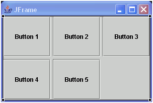
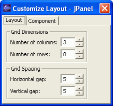

You can use the visual editor for Java to lay out Swing components using GridLayout.
The layout manager java.awt.GridLayout lays out components in a grid
of equal-sized rectangles in rows and columns. You can set the number of rows
or columns that a GridLayout will contain. As you add components, they are
added in order based on the componentOrientation property of the container
that is using GridLayout (RIGHT_TO_LEFT or LEFT_TO_RIGHT).

- To set the grid dimensions for a GridLayout:
- Click the Customize Layout
 toolbar button. The Customize Layout dialog
opens.
toolbar button. The Customize Layout dialog
opens.
- Click the Customize Layout
- To set spacing for components with a GridLayout:
- Open the Customize Layout dialog for the component that is using GridLayout.
- On the Layout notebook tab, enter values for Horizontal gap and Vertical gap. Horizontal gap sets the distance in pixels between columns, while vertical gap sets the spacing between rows.
- To add a component to a GridLayout:
- To move a component within a GridLayout: